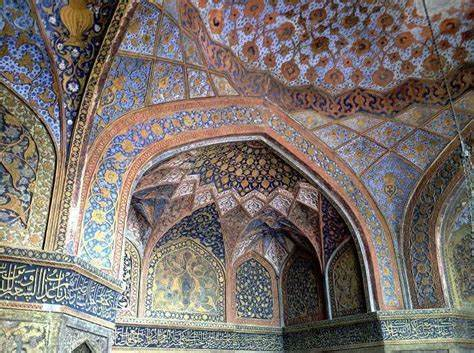
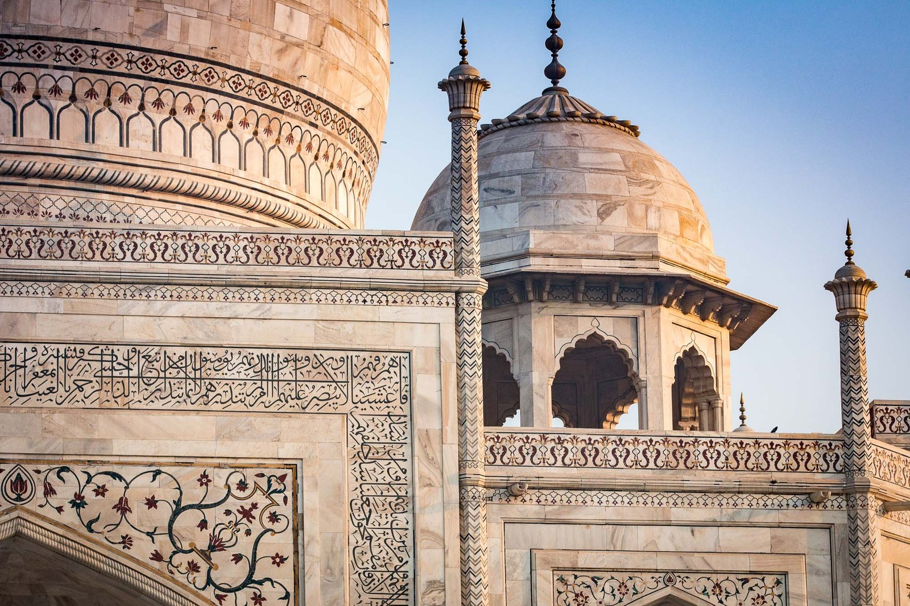

Introduction
The Taj Mahal is an ivory-white marble mausoleum on the right bank of the river Yamuna in the Indian city of Agra. It was commissioned in 1632 by the Mughal emperor Shah Jahan to house the tomb of his favorite wife, Mumtaz Mahal. The tomb is the centrepiece of a 17-hectare (42-acre) complex, which includes a mosque and a guest house, and is set in formal gardens bounded on three sides by a crenellated wall.
Architecture
The Taj Mahal is regarded by many as the best example of Mughal architecture and a symbol of India's rich history. The architectural style combines elements from Islamic, Persian, Ottoman Turkish, and Indian architectural styles. The most notable feature is the marble dome that surmounts the tomb. The dome is nearly 35 meters (115 ft) high, which is close in measurement to the length of the base, and is accentuated by the cylindrical "drum" it sits on, which is approximately 7 meters (23 ft) high.

History
Construction of the mausoleum was essentially completed in 1643, but work continued on other phases of the project for another 10 years. The Taj Mahal complex is believed to have been completed in its entirety in 1653 at a cost estimated at the time to be around 32 million rupees, which in 2020 would be approximately 70 billion rupees (about US $1 billion). The construction project employed some 20,000 artisans under the guidance of a board of architects led by Ustad Ahmad Lahauri, the emperor's court architect.
